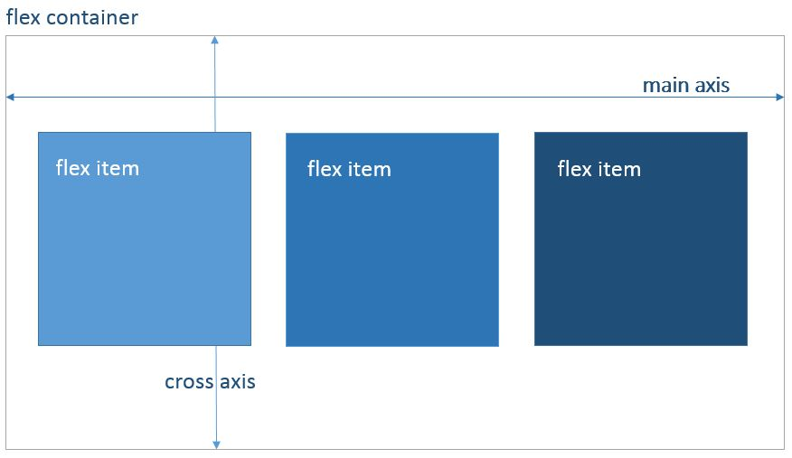
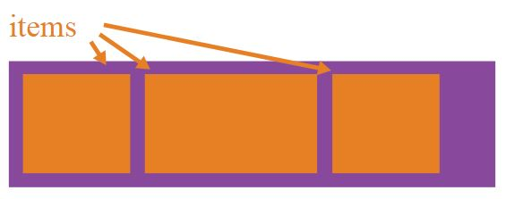
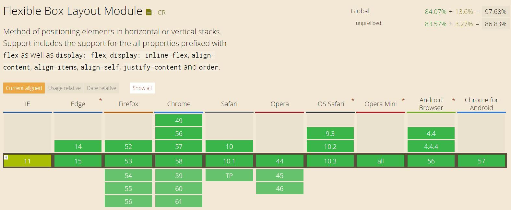

Flexible Box Layout Module
Flex
Anastasia Kreidermann
Layout Model
block
inline
table
positioned layout
flex layout
Flexbox Structure
- Container = flex container
- Immediate children = flex items

Its all about grouping and alining container, its flexible items and the space in between
Flex features

Nestable
Items have equal height by default
Easy responsive layout
Flex container
properties

display
Defines the flex container
.container {
display: flex; /* or inline-flex */
}
flex-direction
Direction of flex item appearance
.container {
flex-direction: row | row-reverse | column | column-reverse;
}
flex-wrap
Allow items to wrap inside container
.container{
flex-wrap: nowrap | wrap | wrap-reverse;
}
flex-flow
Usage of flex-direction and flex-wrap in one line
.container {
flex-flow: <‘flex-direction’> || <‘flex-wrap’>
}
justify-content
Defines alignment of items and usage of free space between them inside the container along the main axis
.container {
justify-content: flex-start | flex-end | center | space-between | space-around;
}
align-items
Defines alignment of container items along cross axis
.container {
align-items: flex-start | flex-end | center | baseline | stretch;
}
align-content
Aligns container lines (item rows) in the cross axis, affecting space between lines
.container {
align-content: flex-start | flex-end | center | space-between | space-around | stretch;
}
Flex items
properties

order
Defines concrete order of special item inside a container
.item {
order: integer;
}
align-self
Overrides the cross axis alignment (align-items) for the individual item
.item {
align-self: auto | flex-start | flex-end | center | baseline | stretch;
}
flex-grow
Defines an abilty to grow in proportion to other items inside the container
.item {
flex-grow: number; /* default 0 */
}
flex-shrink
Defines an abilty to shrink in proportion to other items inside the container
flex-shrink: number; /* default 1 */
flex-basis
Defines the size of the item
flex-basis: length | auto; /* default auto */
flex
Usage of flex-grow, flex-shrink, flex-basis in one line
.item {
flex: none | [ <'flex-grow'> <'flex-shrink'>? || <'flex-basis'> ]
}
Can I use?
Widely accepted: Can I use..Flexbox?
.. but not without Flexbugs
Exercise
Write Css code using Flex Model and reproduce (for small devices arrange sidebars vertically):
HTML-file: <Repository>/flex/exercise/exercise.html